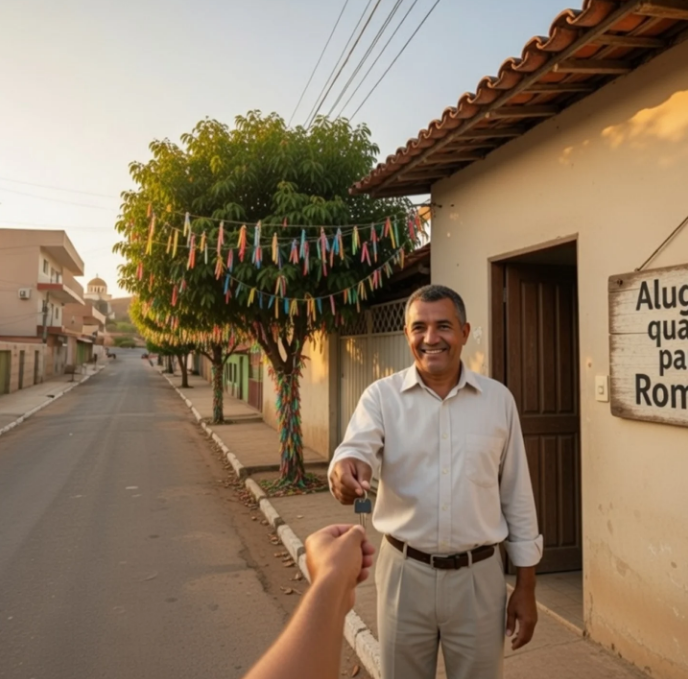

Guia Oficial do Romeiro
Sua Romaria começa aqui.
Hospedagem garantida, os melhores restaurantes e roteiros de fé em Trindade-GO. Feito por quem vive a cidade.
Capital da Fé
Santuário Basílica
Onde Ficar
Alugue direto com o proprietário.

Recomendado
Casa do Sr. Antônio
Ambiente familiar, 3 quartos, garagem para 2 carros. Apenas 10 minutos de caminhada da Basílica. Ideal para famílias em romaria.
Disponível
chat Chamar Sr. Antônio